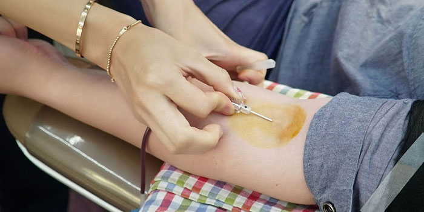

Sometimes it is not possible for you to give blood, or we may have to ask you to wait for a period of time before donating again. To save donors from wasted time and wasted journeys, this page addresses some of the most common questions about eligibility.
If you have an existing medical condition, or have a question about your eligibility to give blood, you should check the health & eligibility and travel section before you book an appointment. Remember, if you ever need to cancel a donation appointment we ask that you give us 72 hours' notice so that we can offer your appointment to another donor. You can easily cancel or reschedule your existing appointments by signing in to your online account or using the NHSGiveBlood app.
If you are feeling under the weather with any of these things it’s best that you wait until you feel better before you give blood. Use our health & eligibility section to find out more.
You must be completely healed or recovered from any infection for at least 14 days before you give blood. If you are taking antibiotics you may need to wait a period of time after your last tablet. Please follow our advice about donating after an infection. Please also see our advice about donating after antibiotics.
During your pregnancy, you are not able to give blood. If you had a blood transfusion during your pregnancy or at delivery then you will not be able to become a blood donor. Please follow our advice about giving blood during and after pregnancy.
We’ll need to check that you can donate. Whether or not you can donate will depend on the medication you are receiving as well as the condition for which you are being treated. Please search for your condition or medication in our health & eligibility section.
Simple fillings and check ups are usually ok after 24 hours. However, some treatments will mean a longer deferral. Please follow our advice about giving blood after dental treatment.
Travel to some parts of the world can affect your ability to donate blood. Search for your destination in our travel section to see if you can donate now or have to wait for a period of time.
We will need to have more information to know if you can give blood. It will depend on your specific heart condition. Please see our advice for giving blood with a heart condition.
If you had this done recently you may have to wait before you can donate again. Please follow our advice about giving blood after a tattoo or getting your body pierced.
Our advice depends on the type of cancer. Please search for the relevant cancer in our health & eligibility section.
We may need more information about your transfusion. Please follow our advice about giving blood after a transfusion. If you have received tissue or an organ, it may be possible to donate blood. Please see our advice about giving blood after a transplant.
It is possible to donate blood if you have high blood pressure or low blood pressure. However, there are some restrictions. Please follow our advice about giving blood when you have high or low blood pressure.
It may be possible to give blood after acupuncture. We will need to know the reason you had the treatment and the certification of the acupuncturist. Please follow the full advice about donating after acupuncture.
We do not prevent people from becoming blood donors based on their sexuality. There are some restrictions for blood donors who take part in activities deemed risk behaviours by the Advisory Committee on the Safety of Blood, Tissues and Organs who advise UK ministers and health departments.
In November 2017 there were changes to the blood donor selection criteria for men who have sex with men. You can read our news statement about the blood donor selection changes.
Adipisci repudiare est ea, sed legimus appetere ut. No ubique maiorum gloriatur est, stet illum ne nam.
Adipisci repudiare est ea, sed legimus appetere ut. No ubique maiorum gloriatur est, stet illum ne nam.
Adipisci repudiare est ea, sed legimus appetere ut. No ubique maiorum gloriatur est, stet illum ne nam.
Adipisci repudiare est ea, sed legimus appetere ut. No ubique maiorum gloriatur est, stet illum ne nam.
Copyright © 2017 Blood donation All rights reserved